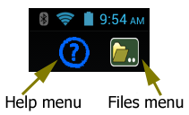
This is the main tuning page for TuneLab. At the very top of the page is the action bar with buttons for the Files menu and the Help menu. Using the Files menu you can load and save tuning files, start a new tuning, enter notations for the current tuning, transfer files to and from external memory (USB-accessible), and manage uploading and downloading files to and from Dropbox cloud storage. The Help menu displays help for all topics or just the page you are on. Watch for similar Help buttons on other pages within the app. Just below the action bar are the current settings. For example, the left side might show something like this: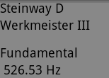
The top line is the name of the currently-loaded tuning. If you choose an unequal temperament, then the next line shows the name of that temperament. Otherwise, the second line is blank. The next line is the current partial in use. This is normally the fundamental for higher notes and higher partials for the lowest notes. Finally, we see the calculated target frequency in Hz for the current note and partial, taking all offsets into account.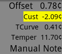
An example of the right side of the display is shown here. The top line is the overall offset. This line is blank if the offset is zero. This offset applies to all the notes of a scale equally, and it used to offset a tuning to a non-standard pitch like A-435.The line in yellow below the offset is for the rarely-used custom offset for the current note only. The line labeled TCurve shows the offset for the current note as determined by the current tuning curve. If you have chosen an historical (non-equal) temperament, the line labeled Temper shows the offset determined by that temperament. Otherwise, that line is blank. The last line shows the type of note switching in effect (manual or auto). These fields are slightly rearranged when the device is rotated to landscape orientation.
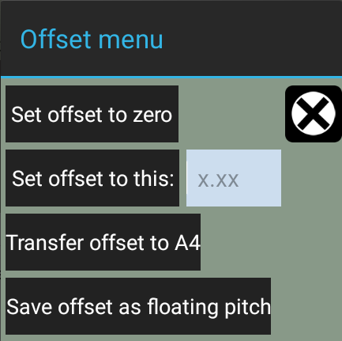
If you want to zero the offset, set it to a specific number, or transfer it to the custom offset for the current note, then tap on the offset and select from this menu. You can also see this menu by the screen gesture of swiping from the current note display up and to the right toward where the offset normally appears. To set the offset to a specific number, first enter the offset in cents and then tap on the button to set it to that number. If you choose to transfer the offset to the custom offset for the current note, normally the entire offset is transferred to the custom offset for that note. But if you are floating the pitch of the entire scale and still want to adjust custom offsets with respect to that pitch you can use item #4 in this menu. That will save the current offset as the floating pitch reference for any subsequent transfers so that they will be interpreted with respect to that reference.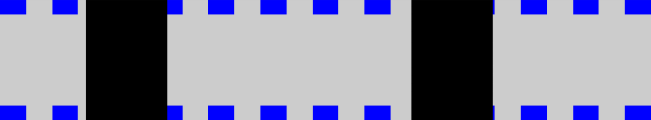
Below the current settings is the Phase Display, which is used for fine-tuning. The squares move left for flat and right for sharp. You can adjust the offset by swiping your finger right or left across the Phase Display. The background turns yellow to remind you that adjusting the offset in this manner is enabled.The  Phase Display can also be made to display the
tuning of multiple partials at once as described here.
Phase Display can also be made to display the
tuning of multiple partials at once as described here.
Below the Phase Display is the Current Note Display. If you tap on this display, you will be able to manually select any note or octave. You can turn auto note switching on by swiping your finger from this display to the right edge of the screen. Turn auto note switching off by swiping from this display to the left edge of the screen. The progress bar above the note shows how close the tuning is to the target. This progress bar begins filling in with yellow when the tuning is within one cent. So the bar shown here indicates a tuning error of about 0.3 cents (the part that remains to be filled in).
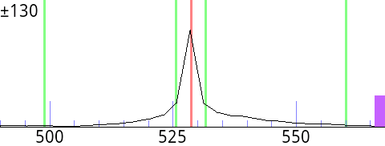
Next comes the Spectrum Display, which can be configured for several different zoom levels in Settings. The vertical red line in the center represents the target pitch. The graph shows a peak for each pitch present. The example shown here has only one pitch.Tapping in the Spectrum Display selects different notes. For this purpose, the Spectrum Display is divided in quadrants or into four side-by-side rectangles depending on the height of the Spectrum Display. If the height is less than 21% of the width then the side-by-side rectangles are used. This typically happens in landscape orientation. Here are the two ways in which the Spectrum Display can be divided up:
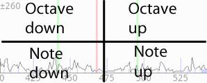
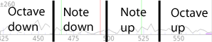
Finally, if you swipe across the entire spectrum display from left to right or right to left, you can force a change to the selected partial, which is normally selected automatically according to which note is selected.
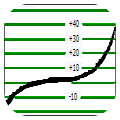
This button switches to the graph of the tuning curve and the deviation curve. There you can control how the tuning curve is calculated to match the inharmonicity. Long-press this button to open 3-part tuning settings.
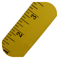
This button starts a measurement of inharmonicity. Press this button, then play the note and hold it for up to three seconds. Mute all but one string. Playing the note triggers the measurement. Long-press this button to control note sequencing after measurements.This button turns on locking mode, which automatically adjusts the offset to match the sound at the microphone. Turn off locking mode promptly when the sound you were locking to is no longer present.
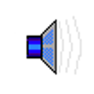
This button switches to the mode where TuneLab generates the target tone in the speaker, rather than listening to the microphone. Long-press this button to select between generating a pure tone at the frequency of the current partial, or generating a full set of partials combined.This image appears in place of a button when the function of that button switches to stopping the operation or mode that was just entered.
This is the Settings button, which sets many configuration parameters and performs a variety of other functions. See the help for that page for more information. Long-press this button to go directly to the last selected section of the settings.
Gestures
Here is a summary of useful gestures you can use on the main tuning screen:
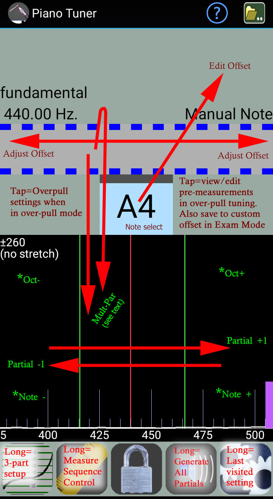
Swipe from current note display to upper left corner = open menu to edit offset.
Swipe left or right through Phase Display = continuously adjust offset.
Tap in Left Status Box when in over-pull mode = go to the over-pull Settings page.
Tap in the current note display = open for direct selection of note and octave.
Tap in Right Status Box when in over-pull tuning mode = view/edit all the over-pull pre-measurements currently in effect.
Tap in Right Status Box when in Exam Capture Mode = transfer current offset to the custom offset for the current note.
Swipe from Phase Display straight down into the Spectrum Display = open a menu to single partial, multi-partial with separate bands for each partial, or multi-partial combined into one Phase Display.
Swipe from Phase Display straight up and then straight down into the Spectrum Display = go directly to editing the multi-partial selections for the current note (only if multi-partial mode was already enabled).
Tap in upper corners of the Spectrum Display = change to next higher or next lower octave.
Tap in lower corners of the Spectrum Display = change to next higher or next lower note.
Swipe left or right through the entire Spectrum Display = change to the next lower or next higher partial.
Long press the Tuning Curve button = go directly to the 3-part tuning setup page.
Long press the Measure button = open a menu to select how inharmonicity measure sequencing will work.
Long press the Speaker button = select generating all the partials of the note (with inharmonicity) or generating only the current partial of the current note.
Long press the Settings button = go directly to the last-visited setting page.